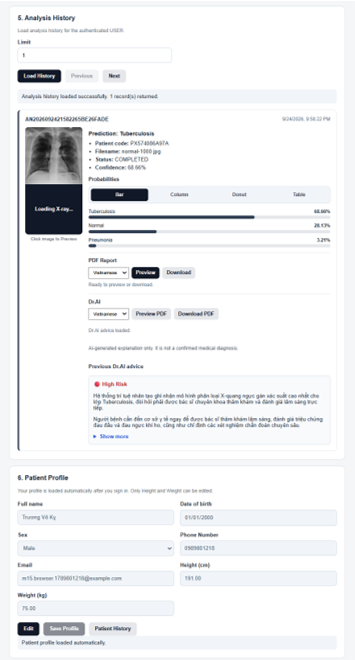
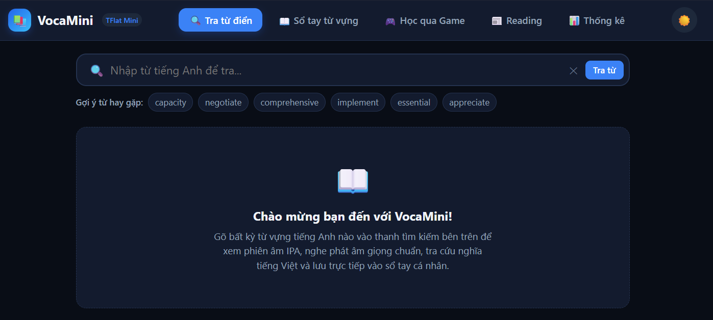

GAA English Education Programs
From 25 Dec 2025
Supported work involving five GAA education programs:
Hi, my name is
I'm a software engineering student who enjoys building practical AI applications and exploring how software works under the hood — from medical imaging systems and local LLMs to C++, Linux, and GPU computing. I care about building software that is reliable, efficient, and genuinely useful to the people who use it.
Hello! I'm Tuan, a final-year Software Engineering student at Nguyen Tat Thanh University in Ho Chi Minh City. I enjoy breaking down complex problems, learning how systems work, and building practical solutions.
I've worked on chest X-ray classification, backend APIs, and a vocabulary-learning app. These projects have taught me to think beyond individual features and consider how models, data, and interfaces work together. I'm also studying C++, Linux, parallel computing, and CUDA as I explore systems and GPU software.
Here are some technologies I'm working with:
25 Dec 2025 – 15 Aug 2026 · Operations, Marketing & Administration
Select a role to see the responsibilities and work I handled.
Selected initiatives I supported through company operations, communications, and partner collaboration.
From 25 Dec 2025
Supported work involving five GAA education programs:
From 10 Jan 2026
Participated in an affiliate marketing partnership and supported communication and promotional planning.
From Mar 2026
Supported an English-language heritage initiative in collaboration with Toluck and partners associated with the Vietnam Records Institute, including coordination related to its website.
From Mar 2026
Supported a related heritage initiative with another partner, including coordination around the project website.
From Mar 2026
Supported partner collaboration on Nông Thị 2.0, an initiative started by Nguyễn Văn Cường, founder of An Nông Group.

Featured Project / AI & Backend
A chest X-ray analysis system that classifies images as Normal, Pneumonia, or Tuberculosis. It includes a prediction API, patient records, analysis history, and PDF reporting. The documented MobileNetV2 model achieved 89.62% test accuracy on 318 held-out images.
Select a technology to see what I used it for.
Used as the main language for backend logic, image validation, and preparation of model inputs.
Loaded and executed the image-classification model and managed the inference pipeline.
Applied transfer learning for three-class classification using 224 × 224 × 3 RGB inputs normalized to [-1, 1].
Built REST endpoints for predictions, model information, patient records, and analysis history.
Mapped database tables to Python objects and implemented persistence and queries through the ORM.
Stored application data such as patient records, user information, and prediction history.
Tracked schema changes and applied database migrations as the backend evolved.
Containerized services and configured the application deployment using Docker Compose.
Generated PDF reports containing structured information from the analysis workflow.

Featured Project / Learning App & Speech
An English vocabulary-learning app with dictionary lookup, pronunciation playback, personal vocabulary notebooks, and experiments in offline speech recognition. Developed for the web, with an Android debug build.
Select a technology to see what I used it for.
Implemented vocabulary interactions, API responses, audio controls, and UI state.
Used as the development and build tool for the web application.
Used Service Worker caching so the installed web app can reuse cached assets offline.
Saved vocabulary notebooks and learning preferences locally in the browser.
Retrieved word meanings, phonetics, examples, and translations with client-side caching and fallback handling.
Played example pronunciation with browser text-to-speech and adjustable playback rate.
Prototyped offline speech recognition for pronunciation practice; this work may be on a separate feature branch.
Packaged an Android debug APK from the web application for device testing.
Featured Project / Web & Frontend
This bilingual, responsive portfolio introduces my work and experience. It uses plain HTML, CSS, and JavaScript, with language preference persistence and scroll-based interactions.
Select a technology to see what I used it for.
Structured semantic sections for About, Experience, Projects, and Contact.
Built responsive layouts with Media Queries, accessible navigation styling, and transitions.
Implemented EN/VI switching, mobile navigation, dynamic links, and interactive controls.
Updated text and attributes directly in the page when visitors change the language.
Remembered the selected language between visits.
Triggered reveal effects and highlighted navigation based on the visible section.
Managed version history and published the portfolio source code for review.
Smaller experiments, meaningful lessons.
Local AI / RAG
A local RAG assistant for exploring CUDA documentation. It retrieves relevant passages and generates source-cited answers using a local language model.
Systems / Performance · Learning
A C++ matrix multiplication project focused on building a correct CPU baseline and measuring performance. CUDA kernel optimization remains a learning goal.
04. What's Next?
I'm always open to learning, thoughtful conversations, and opportunities to work on challenging software. Have an idea, a question, or just want to say hello? My inbox is open.
Say Hello